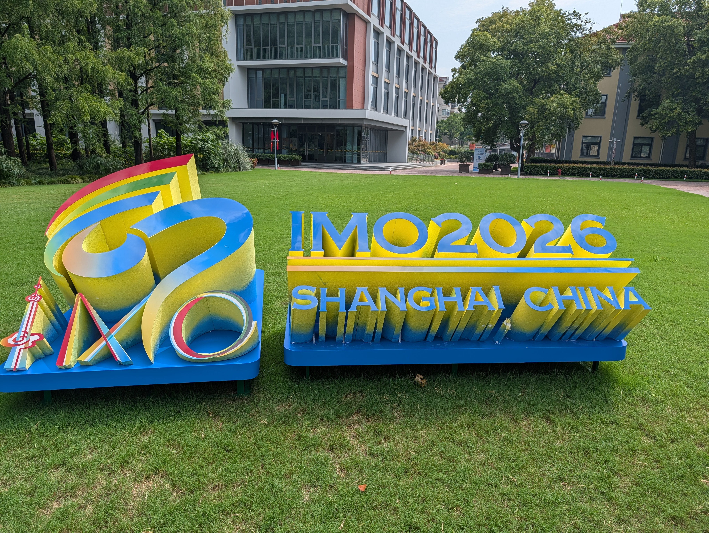
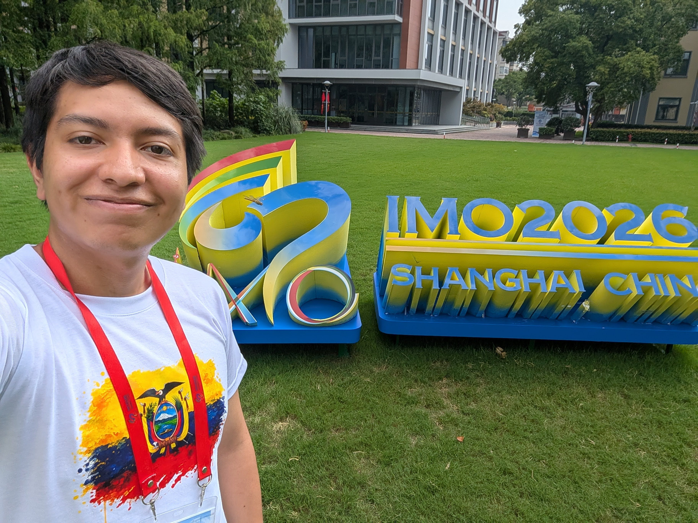
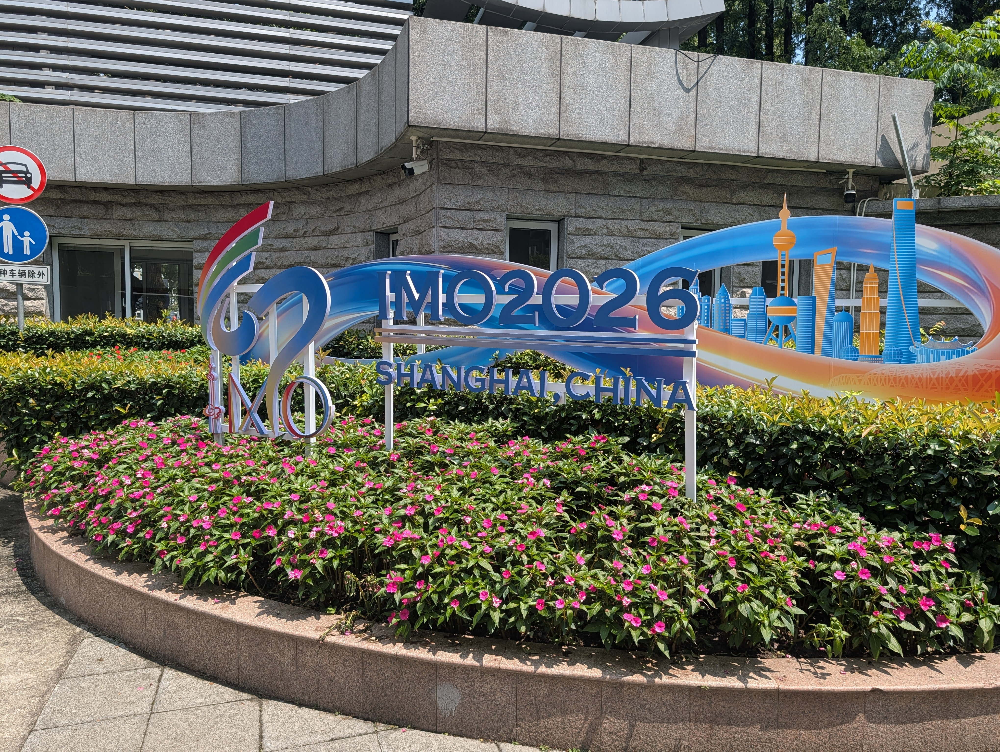
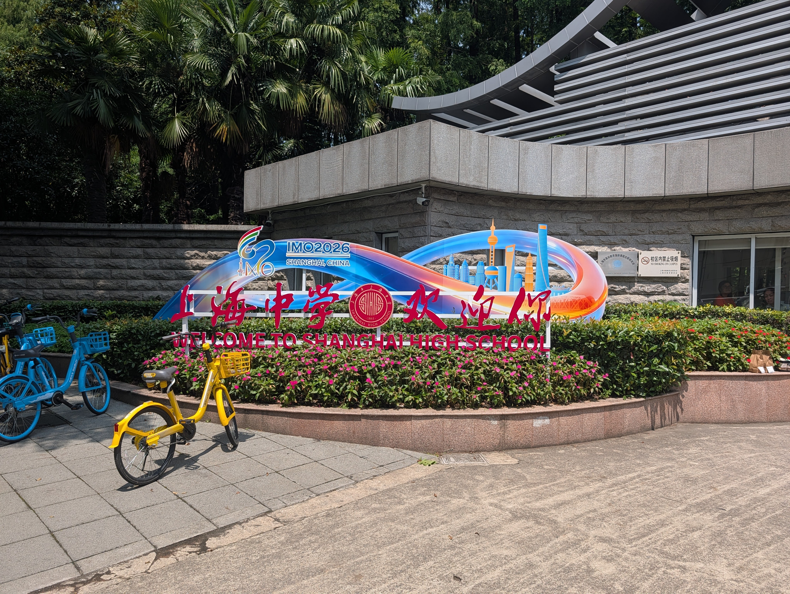
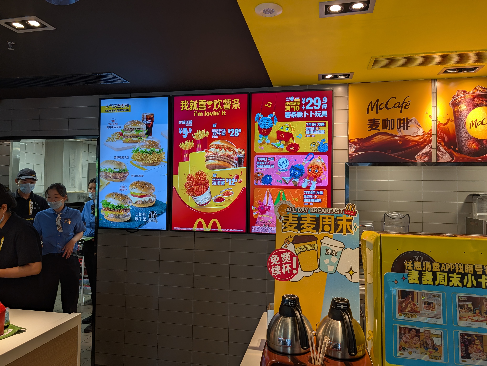
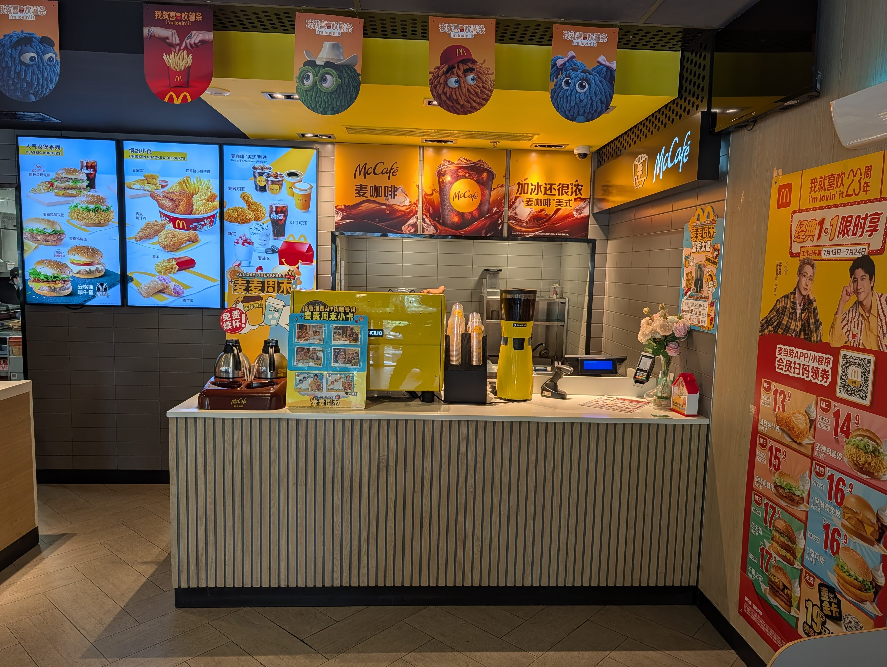
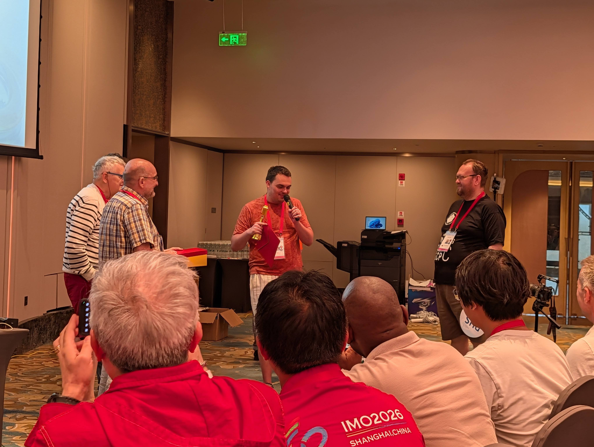

Shopping Mall Yet Again
The kids cried out for help again wanting to go out. We went in the morning and took them to a different shopping mall nearby. Before going out, we took some nice pics with a shirt a sponsor provided. Mine was a little too tight so I think Rachel just got a new shirt, lol.




They have struggled with the food being provided at the school, so most of they had not had breakfast yet. They all immediately rushed to starbucks. You can be sure I was giving them judgy looks, lol. In fact, they go enough Starbucks, Popeyes, Mcdonals to last them for a few meals. I took a few photos of the McDonalds. Their menu look a little like KFC.


Final Jury Meeting
I had to run back to my hotel as I had a few (bureacratic) jury meeting and the very important meeting to decide the medal cutoffs.
Microphone D'or
Aside from medal cutoffs, one really cool thing we did in this jury meeting was the Microphone D'or award ceremony. This award is presented to the Leader who spoked the most during our jury meetings. This year French Leader Theo won the award having asked for the microphone 47 times!

Medal Cutoffs
At this point we already knew the scores of our kids. Our top 2 students solved 2/6 problems perfectly obtaining 14 points. In this competition, 16-18 points is the usually bronze medal cutoff, so we knew we were likely not going to obtain medals this year. Also, based on the problems, we knew that the bronze cutoff wasn't going to be low.
This wasn't my first time in a meeting deciding the medal cutoffs, but doing it at an IMO is a different game. With many countries deciding presenting arguments on why we should/shouldn't award more medals (i.e., lower/raise the cutoffs).
This year, turns out our intuition was right and the cutoff was 16. Sadly this means we go back with no medals, but I can't say I'm not satisfied with our student's performance. From going over their solutions, it was clear that they tried their best till the end. Additionally, our top two students have at least two more IMOs, so I can't wait to see what they will continue to accomplish.
Cruise?
A cruise on the Huangpu River was planned after the final meeting with all the students. Unfortunately we had terrible weather (pouring + strong wind) and thus this plan was cancelled. Instead we got to visit the students for dinner.